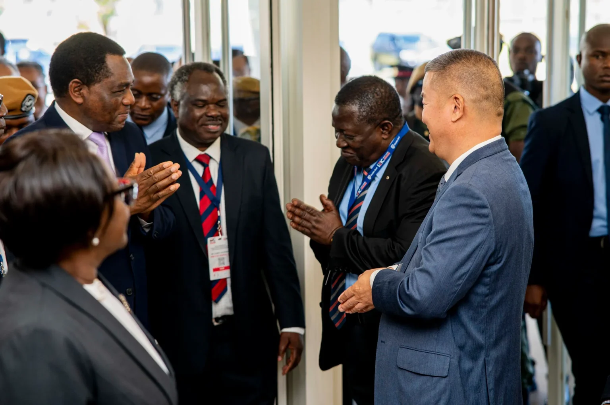

Invest-Zambia Conference 2026
About IZIC 2026
The Invest-Zambia International Conference (IZIC) is Zambia’s flagship investment promotion platform, hosted by the Zambia Development Agency (ZDA) to position the country as a preferred destination for trade and investment. Launched in 2025, IZIC brings together global investors, policymakers, financiers, development partners, and the private sector to catalyse joint ventures, strategic partnerships, and bankable investment deals across Zambia’s priority sectors.
IZIC aligns directly with Zambia’s Eighth National Development Plan (8NDP) and Statutory Instrument No. 47 of 2023, with a strong focus on agriculture and agro-processing, energy, mining and mineral beneficiation, manufacturing, infrastructure, ICT and the digital economy, financial services, and tourism.
The platform combines high-level policy dialogue with practical deal-making through B2B and B2G meetings, exhibitions, pitch sessions, and structured deal rooms.